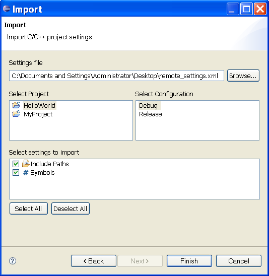

Importing C/C++ Project Settings
To access the project settings import wizard do the following:
-
Open the Import Wizard Dialog by selecting File > Import... or
activate a context menu on a C/C++ project and select Import....
- Select C/C++ > C/C++ Project Settings.
- Click Next

To import the settings into a project do the following:
-
Select a file that contains the settings to be imported. The file
must be in the same format as generated by the
project settings export wizard. The wizard quickly parses
the file to determine what types of settings it contains. If
the file cannot be parsed an error message is displayed.
- Select a project. Only open C/C++ and Remote C/C++ projects are listed.
- Select a build configuration
- Select the types of settings to be imported. Only the types of settings actually
contained in the file are displayed.
- Click Finish

It may be necessary to perform a reindex for some of the new settings to take effect.
For example if include paths were imported a reindex may be required for the indexer
to pick up header files from the new paths.